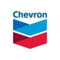
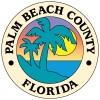

WORK_LOG
- Built/deployed full-stack web server (MySQL, .NET Razor Pages, C#) to monitor user path scenarios
- Enabled live tracking of path statistics to improve stress test reliability
- Served as Intern Squad Leader and panelist for STEAM Camp
C#
.NET
MYSQL
- Developed data health visualization dashboard for file tracking using Streamlit
- Integrated Snowflake, Datadog, and Databricks for performance insights
PYTHON
STREAMLIT
SNOWFLAKE

- Utilized Azure DevOps and agile development framework to track project progress.
- Build a digital platform to track carbon emissions of a sub-company oil processes amongst 6 Business Units utilizing Power Bi. - Utilized Azure Databricks and PysparkSQL to perform transformations and visualizations (Databricks Notebooks) on datasets.
- Effectively communicated and executed project goals and expectations directly with sub-company stakeholders while developing business fluency skill set.
AZURE
POWERBI
SAP

- Utilized Azure DevOps and agile development framework to track project progress.
- Build a digital platform to track carbon emissions of a sub-company oil processes amongst 6 Business Units utilizing Power Bi. - Utilized Azure Databricks and PysparkSQL to perform transformations and visualizations (Databricks Notebooks) on datasets.
- Effectively communicated and executed project goals and expectations directly with sub-company stakeholders while developing business fluency skill set.
HTML
CSS
CYBERSECURITY